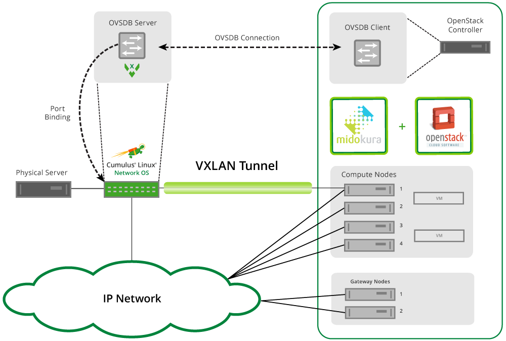
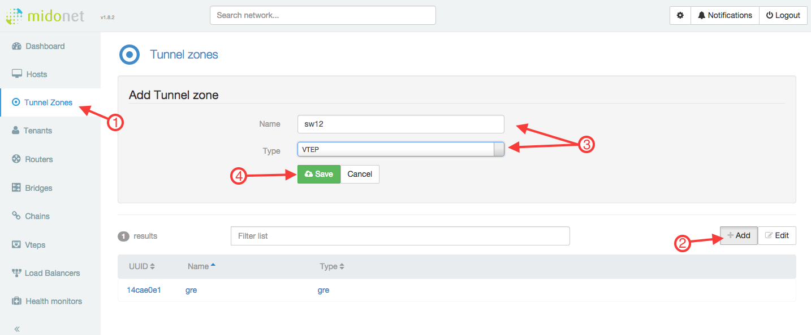
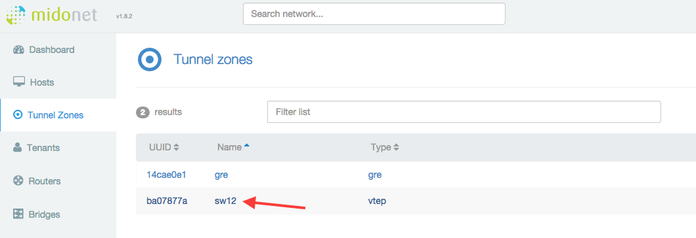
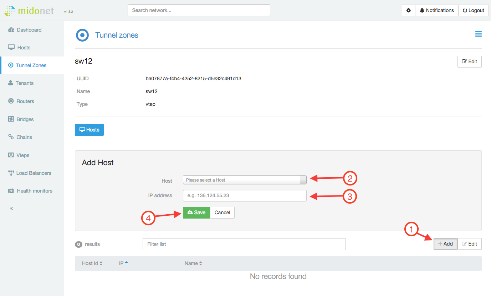
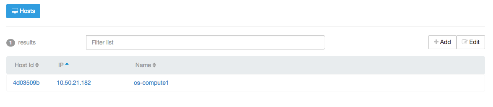
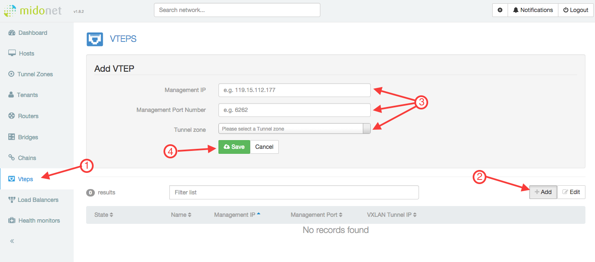
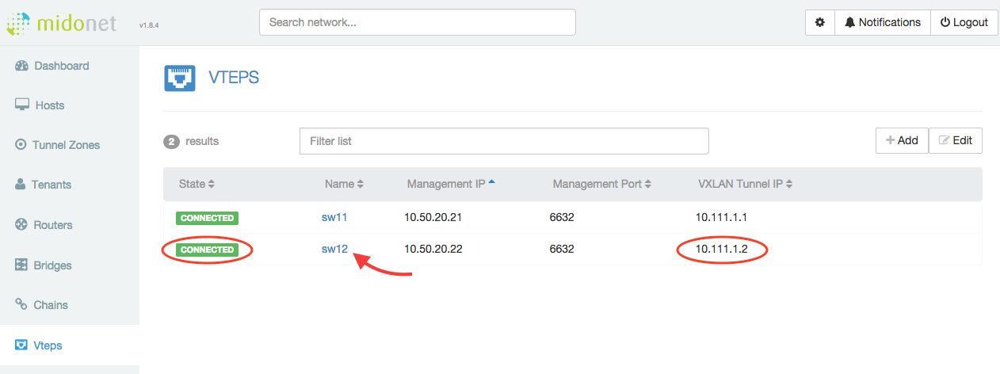
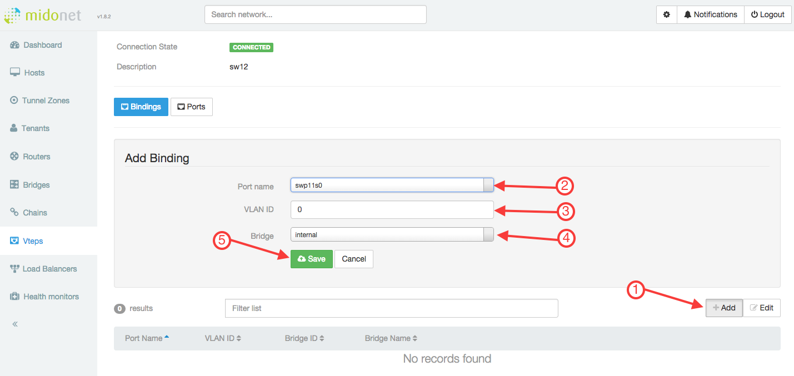
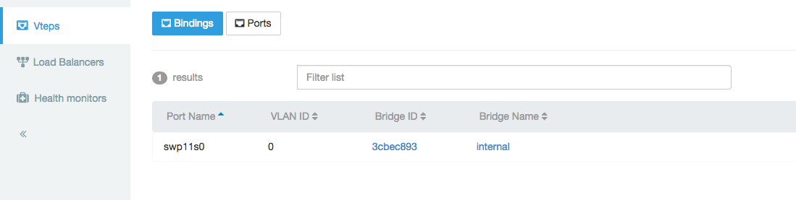

Integrating Hardware VTEPs with Midokura MidoNet and OpenStack
Cumulus Linux seamlessly integrates with the MidoNet OpenStack infrastructure, where the switches provide the VTEP gateway for terminating VXLAN tunnels from within MidoNet. MidoNet connects to the OVSDB server running on the Cumulus Linux switch, and exchanges information about the VTEPs and MAC addresses associated with the OpenStack Neutron networks. This provides seamless Ethernet connectivity between virtual and physical server infrastructures.

Contents
Getting Started
Before you create VXLANs with MidoNet, make sure you have the following components:
-
A switch (L2 gateway) with a Tomahawk, Trident II+ or Trident II chipset running Cumulus Linux 2.0 and later
-
OVSDB server (ovsdb-server), included in Cumulus Linux 2.0 and later
-
VTEPd (ovs-vtepd), included in Cumulus Linux 2.0 and later
Integrating a VXLAN with MidoNet involves:
-
Preparing for the MidoNet integration
-
Bootstrapping the OVS and VTEP
-
Configuring the MidoNet VTEP binding
-
Verifying the VXLAN configuration
Caveats and Errata
-
There is no support for VXLAN routing in the Tomahawk, Trident II+ and Trident II chipsets; use a loopback interface or external router.
-
For more information about MidoNet, see the MidoNet Operations Guide, version 1.8 or later.
Preparing for the MidoNet Integration
Before you start configuring the MidoNet tunnel zones, VTEP binding and connecting virtual ports to the VXLAN, you need to complete the bootstrap process on each switch to which you plan to build VXLAN tunnels. This creates the VTEP gateway and initializes the OVS database server. You only need to do the bootstrapping once, before you begin the MidoNet integration.
Enabling the openvswitch-vtep Package
Before you start bootstrapping the integration, you need to enable the openvswitch-vtep package, since it is disabled by default in Cumulus Linux.
-
Edit the /etc/default/openvswitch-vtep file, changing the START option from no to yes. This simple sed command does this, and creates a backup as well:
cumulus@switch:~$ sudo sed -i.bak s/START=no/START=yes/g /etc/default/openvswitch-vtep -
Start the daemon:
cumulus@switch:~$ sudo systemctl start openvswitch-vtep.service
Bootstrapping the OVSDB Server and VTEP
Automating with the Bootstrap Script
The vtep-bootstrap script is available so you can do the bootstrapping automatically. For information, read man vtep-bootstrap. This script requires three parameters, in this order:
-
Switch name: The name of the switch that is the VTEP gateway.
-
Tunnel IP address: The datapath IP address of the VTEP.
-
Management IP address: The IP address of the switch's management interface.
cumulus@switch:~$ sudo vtep-bootstrap sw11 10.111.1.1 10.50.20.21 --no_encryptionExecuted: define physical switch ().Executed: define local tunnel IP address on the switch ().Executed: define management IP address on the switch ().Executed: restart a service (Killing ovs-vtepd (28170).Killing ovsdb-server (28146).Starting ovsdb-server.Starting ovs-vtepd.).
Since MidoNet does not have a controller, you need to use a dummy IP address (for example, 1.1.1.1) for the controller parameter in the bootstrap script. After the script completes, delete the VTEP manager, since it is not needed and will otherwise fill the logs with inconsequential error messages:
cumulus@switch:~$ sudo vtep-ctl del-managerManually Bootstrapping
If you don't use the bootstrap script, then you must initialize the OVS database instance manually, and create the VTEP.
Perform the following commands in order (see the automated bootstrapping example above for values):
-
Define the switch in OVSDB:
cumulus@switch:~$ sudo vtep-ctl add-ps <switch_name> -
Define the VTEP tunnel IP address:
cumulus@switch:~$ sudo vtep-ctl set Physical_switch <switch_name> tunnel_ips=<tunnel_ip> -
Define the management interface IP address:
cumulus@switch:~$ sudo vtep-ctl set Physical_switch <switch_name> management_ips=<management_ip> -
Restart the OVSDB server and vtepd:
cumulus@switch:~$ sudo systemctl restart openvswitch-vtep.service
At this point, the switch is ready to connect to MidoNet. The rest of the configuration is performed in the MidoNet Manager GUI, or using the MidoNet API.
Configuring MidoNet VTEP and Port Bindings
This part of the configuration sets up MidoNet and OpenStack to connect the virtualization environment to the Cumulus Linux switch. The midonet-agent is the networking component that manages the VXLAN, while the Open Virtual Switch (OVS) client on the OpenStack controller node communicates MAC address information between the midonet-agent and the Cumulus Linux OVS database (OVSDB) server.
Using the MidoNet Manager GUI
Creating a Tunnel Zone
-
Click Tunnel Zones in the menu on the left side.
-
Click Add.
-
Give the tunnel zone a Name and select "VTEP" for the Type.
-
Click Save.

Adding Hosts to a Tunnel Zone
Once the tunnel zone is created, click the name of the tunnel zone to view the hosts table.

The tunnel zone is a construct used to define the VXLAN source address used for the tunnel. This host's address is used for the source of the VXLAN encapsulation, and traffic will transit into the routing domain from this point. Thus, the host must have layer 3 reachability to the Cumulus Linux switch tunnel IP.
Next, add a host entry to the tunnel zone:
-
Click Add.
-
Select a host from the Host list.
-
Provide the tunnel source IP Address to use on the selected host.
-
Click Save.

The host list now displays the new entry:

Creating the VTEP
-
Click the Vteps menu on the left side.
-
Click Add.
-
Fill out the fields using the same information you used earlier on the switch for the bootstrap procedure:
- Management IP is typically the eth0 address of the switch. This tells the OVS-client to connect to the OVSDB-server on the Cumulus Linux switch.
- Management Port Number is the PTCP port you configured in the ovs-ctl-vtep script earlier (the example uses 6632).
- Tunnel Zone is the name of the zone you created in the previous procedure. -
Click Save.

The new VTEP appears in the list below. MidoNet then initiates a connection between the OpenStack Controller and the Cumulus Linux switch. If the OVS client is successfully connected to the OVSDB server, the VTEP entry should display the switch name and VXLAN tunnel IP address, which you specified during the bootstrapping process.

Binding Ports to the VTEP
Now that connectivity is established to the switch, you need to add a physical port binding to the VTEP on the Cumulus Linux switch:
-
Click Add.
-
In the Port Name list, select the port on the Cumulus Linux switch that you are using to connect to the VXLAN segment.
-
Specify the VLAN ID (enter 0 for untagged).
-
In the Bridge list, select the MidoNet bridge that the instances (VMs) are using in OpenStack.
-
Click Save.

You should see the port binding displayed in the binding table under the VTEP.

Once the port is bound, this automatically configures a VXLAN bridge interface, and includes the VTEP interface and the port bound to the bridge. Now the OpenStack instances (VMs) should be able to ping the hosts connected to the bound port on the Cumulus switch. The Troubleshooting section below demonstrates the verification of the VXLAN data and control planes.
Using the MidoNet CLI
To get started with the MidoNet CLI, you can access the CLI prompt on the OpenStack Controller:
root@os-controller:~# midonet-cli
midonet>
Now from the MidoNet CLI, the commands explained in this section perform the same operations depicted in the previous section with the MidoNet Manager GUI.
-
Create a tunnel zone with a name and type vtep:
midonet> tunnel-zone create name sw12 type vteptzone1 -
The tunnel zone is a construct used to define the VXLAN source address used for the tunnel. This host's address is used for the source of the VXLAN encapsulation, and traffic will transit into the routing domain from this point. Thus, the host must have layer 3 reachability to the Cumulus Linux switch tunnel IP.
-
First, get the list of available hosts connected to the Neutron network and the MidoNet bridge.
-
Next, get a listing of all the interfaces.
-
Finally, add a host entry to the tunnel zone ID returned in the previous step, and specify which interface address to use.
midonet> list hosthost host0 name os-compute1 alivetruehost host1 name os-network alivetruemidonet> host host0 listinterfaceiface midonet host_id host0 status0addresses [] mac02:4b:38:92:dd:ce mtu1500type Virtual endpoint DATAPATHiface lo host_id host0 status3addresses [u'127.0.0.1', u'169.254.169.254', u'0:0:0:0:0:0:0:1'] mac00:00:00:00:00:00mtu65536type Virtual endpoint LOCALHOSTiface virbr0 host_id host0 status1addresses [u'192.168.122.1'] mac22:6e:63:90:1f:69mtu1500type Virtual endpoint UNKNOWNiface tap7cfcf84c-26host_id host0 status3addresses [u'fe80:0:0:0:e822:94ff:fee2:d41b'] mac ea:22:94:e2:d4:1b mtu65000type Virtual endpoint DATAPATHiface eth1 host_id host0 status3addresses [u'10.111.0.182', u'fe80:0:0:0:5054:ff:fe85:acd6'] mac52:54:00:85:ac:d6 mtu1500type Physical endpoint PHYSICALiface tapfd4abcea-df host_id host0 status3addresses [u'fe80:0:0:0:14b3:45ff:fe94:5b07'] mac16:b3:45:94:5b:07mtu65000type Virtual endpoint DATAPATHiface eth0 host_id host0 status3addresses [u'10.50.21.182', u'fe80:0:0:0:5054:ff:feef:c5dc'] mac52:54:00:ef:c5:dc mtu1500type Physical endpoint PHYSICALmidonet> tunnel-zone tzone0 add member host host0 address10.111.0.182zone tzone0 host host0 address10.111.0.182
Repeat this procedure for each OpenStack host connected to the Neutron network and the MidoNet bridge.
-
-
Create a VTEP and assign it to the tunnel zone ID returned in the previous step. The management IP address (the destination address for the VXLAN/remote VTEP) and the port must be the same ones you configured in the vtep-bootstrap script or the manual bootstrapping:
midonet> vtep add management-ip10.50.20.22management-port6632tunnel-zone tzone0name sw12 description sw12 management-ip10.50.20.22management-port6632tunnel-zone tzone0 connection-state CONNECTEDIn this step, MidoNet initiates a connection between the OpenStack Controller and the Cumulus Linux switch. If the OVS client is successfully connected to the OVSDB server, the returned values should show the name and description matching the switch-name parameter specified in the bootstrap process.
Verify the connection-state as CONNECTED, otherwise if ERROR is returned, you must debug. Typically this only fails if the management-ip and/or management-port settings are wrong.
-
The VTEP binding uses the information provided to MidoNet from the OVSDB server, providing a list of ports that the hardware VTEP can use for layer 2 attachment. This binding virtually connects the physical interface to the overlay switch, and joins it to the Neutron bridged network.
First, get the UUID of the Neutron network behind the MidoNet bridge:
midonet> list bridgebridge bridge0 name internal state upbridge bridge1 name internal2 state upmidonet> show bridge bridge1 id6c9826da-6655-4fe3-a826-4dcba6477d2dNext, create the VTEP binding, using the UUID and the switch port being bound to the VTEP on the remote end. If there is no VLAN ID, set vlan to 0:
midonet> vtep name sw12 binding add network-id 6c9826da-6655-4fe3-a826-4dcba6477d2d physical-port swp11s0 vlan0management-ip10.50.20.22physical-port swp11s0 vlan0network-id 6c9826da-6655-4fe3-a826-4dcba6477d2d
At this point, the VTEP should be connected, and the layer 2 overlay should be operational. From the openstack instance (VM), you should be able to ping a physical server connected to the port bound to the hardware switch VTEP.
Troubleshooting MidoNet and Cumulus VTEPs
As with any complex system, there is a control plane and data plane.
Troubleshooting the Control Plane
In this solution, the control plane consists of the connection between the OpenStack Controller, and each Cumulus Linux switch running the ovsdb-server and vtepd daemons.
Verifying VTEP and OVSDB Services
First, it is important that the OVSDB server and ovs-vtep daemon are running. Verify this is the case:
cumulus@switch12:~$ systemctl status openvswitch-vtep.serviceovsdb-server is running with pid 17440ovs-vtepd is running with pid 17444Verifying OVSDB-server Connections
From the OpenStack Controller host, verify that it can connect to the ovsdb-server. Telnet to the switch IP address on port 6632:
root@os-controller:~# telnet 10.50.20.22 6632Trying 10.50.20.22...Connected to 10.50.20.22.Escape character is '^]'.<Ctrl+c>Connection closed by foreign host.If the connection fails, verify IP reachability from the host to the switch. If that succeeds, it is likely the bootstrap process did not set up port 6632. Redo the bootstrapping procedures above.
root@os-controller:~# ping -c1 10.50.20.22PING 10.50.20.22 (10.50.20.22) 56(84) bytes of data.64 bytes from 10.50.20.22: icmp_seq=1 ttl=63 time=0.315 ms--- 10.50.20.22 ping statistics ---1 packets transmitted, 1 received, 0% packet loss, time 0msrtt min/avg/max/mdev = 0.315/0.315/0.315/0.000 msVerifying the VXLAN Bridge and VTEP Interfaces
After creating the VTEP in MidoNet and adding an interface binding, you should see br-vxln and vxln interfaces on the switch. You can verify that the VXLAN bridge and VTEP interface are created and UP:
cumulus@switch12:~$ sudo brctl show bridge name bridge id STP enabled interfacesbr-vxln10006 8000.00e0ec2749a2 no swp11s0 vxln10006cumulus@switch12:~$ sudo ip -d link show vxln1000655: vxln10006: <BROADCAST,MULTICAST,UP,LOWER_UP> mtu 1500 qdisc noqueue master br-vxln10006 state UNKNOWN mode DEFAULT link/ether 72:94:eb:b6:6c:c3 brd ff:ff:ff:ff:ff:ff vxlan id 10006 local 10.111.1.2 port 32768 61000 nolearning ageing 300 svcnode 10.111.0.182 bridge_slaveNext, look at the bridging table for the VTEP and the forwarding entries. The bound interface and the VTEP should be listed along with the MAC addresses of those interfaces. When the hosts attached to the bound port send data, those MACs are learned, and entered into the bridging table, as well as the OVSDB.
cumulus@switch12:~$ brctl showmacs br-vxln10006port name mac addr vlan is local? ageing timerswp11s0 00:e0:ec:27:49:a2 0 yes 0.00swp11s0 64:ae:0c:32:f1:41 0 no 0.01vxln10006 72:94:eb:b6:6c:c3 0 yes 0.00cumulus@switch12:~$ sudo bridge fdb show br-vxln10006fa:16:3e:14:04:2e dev vxln10004 dst 10.111.0.182 vlan 65535 self permanent00:e0:ec:27:49:a2 dev swp11s0 vlan 0 master br-vxln10004 permanentb6:71:33:3b:a7:83 dev vxln10004 vlan 0 master br-vxln10004 permanent64:ae:0c:32:f1:41 dev swp11s0 vlan 0 master br-vxln10004Datapath Troubleshooting
If you have verified the control plane is correct, and you still cannot get data between the OpenStack instances and the physical nodes on the switch, there may be something wrong with the data plane. The data plane consists of the actual VXLAN encapsulated path, between one of the OpenStack nodes running the midolman service. This is typically the compute nodes, but can include the MidoNet gateway nodes. If the OpenStack instances can ping the tenant router address but cannot ping the physical device connected to the switch (or vice versa), then something is wrong in the data plane.
Verifying IP Reachability
First, there must be IP reachability between the encapsulating node, and the address you bootstrapped as the tunnel IP on the switch. Verify the OpenStack host can ping the tunnel IP. If this doesn't work, check the routing design, and fix the layer 3 problem first.
root@os-compute1:~# ping -c1 10.111.1.2PING 10.111.1.2 (10.111.1.2) 56(84) bytes of data.64 bytes from 10.111.1.2: icmp_seq=1 ttl=62 time=0.649 ms--- 10.111.1.2 ping statistics ---1 packets transmitted, 1 received, 0% packet loss, time 0msrtt min/avg/max/mdev = 0.649/0.649/0.649/0.000 msMidoNet VXLAN Encapsulation
If the instance (VM) cannot ping the physical server, or the reply is not returning, look at the packets on the OpenStack node. Initiate a ping from the OpenStack instance, then using tcpdump, hopefully you can see the VXLAN data. This example displays what it looks like when it is working.
root@os-compute1:~# tcpdump -i eth1 -l -nnn -vvv -X -e port 478952:54:00:85:ac:d6 > 00:e0:ec:26:50:36, ethertype IPv4 (0x0800), length 148: (tos 0x0, ttl 255, id 7583, offset 0, flags [none], proto UDP (17), length 134) 10.111.0.182.41568 > 10.111.1.2.4789: [no cksum] VXLAN, flags [I] (0x08), vni 10008fa:16:3e:14:04:2e > 64:ae:0c:32:f1:41, ethertype IPv4 (0x0800), length 98: (tos 0x0, ttl 64, id 64058, offset 0, flags [DF], proto ICMP (1), length 84) 10.111.102.104 > 10.111.102.2: ICMP echo request, id 15873, seq 0, length 64 0x0000: 4500 0086 1d9f 0000 ff11 8732 0a6f 00b6 E..........2.o.. 0x0010: 0a6f 0102 a260 12b5 0072 0000 0800 0000 .o...`...r...... 0x0020: 0027 1800 64ae 0c32 f141 fa16 3e14 042e .'..d..2.A..>... 0x0030: 0800 4500 0054 fa3a 4000 4001 5f26 0a6f ..E..T.:@.@._&.o 0x0040: 6668 0a6f 6602 0800 f9de 3e01 0000 4233 fh.of.....>...B3 0x0050: 7dec 0000 0000 0000 0000 0000 0000 0000 }............... 0x0060: 0000 0000 0000 0000 0000 0000 0000 0000 ................ 0x0070: 0000 0000 0000 0000 0000 0000 0000 0000 ................ 0x0080: 0000 0000 0000 ......00:e0:ec:26:50:36 > 52:54:00:85:ac:d6, ethertype IPv4 (0x0800), length 148: (tos 0x0, ttl 62, id 2689, offset 0, flags [none], proto UDP (17), length 134) 10.111.1.2.63385 > 10.111.0.182.4789: [no cksum] VXLAN, flags [I] (0x08), vni 1000864:ae:0c:32:f1:41 > fa:16:3e:14:04:2e, ethertype IPv4 (0x0800), length 98: (tos 0x0, ttl 255, id 64058, offset 0, flags [DF], proto ICMP (1), length 84) 10.111.102.2 > 10.111.102.104: ICMP echo reply, id 15873, seq 0, length 64 0x0000: 4500 0086 0a81 0000 3e11 5b51 0a6f 0102 E.......>.[Q.o.. 0x0010: 0a6f 00b6 f799 12b5 0072 0000 0800 0000 .o.......r...... 0x0020: 0027 1800 fa16 3e14 042e 64ae 0c32 f141 .'....>...d..2.A 0x0030: 0800 4500 0054 fa3a 4000 ff01 a025 0a6f ..E..T.:@....%.o 0x0040: 6602 0a6f 6668 0000 01df 3e01 0000 4233 f..ofh....>...B3 0x0050: 7dec 0000 0000 0000 0000 0000 0000 0000 }............... 0x0060: 0000 0000 0000 0000 0000 0000 0000 0000 ................ 0x0070: 0000 0000 0000 0000 0000 0000 0000 0000 ................ 0x0080: 0000 0000 0000 ......Inspecting the OVSDB
Using VTEP-CTL
These commands show you the information installed in the OVSDB. This database is structured using the physical switch ID, with one or more logical switch IDs associated with it. The bootstrap process creates the physical switch, and MidoNet creates the logical switch after the control session is established.
Listing the Physical Switch
cumulus@switch12:~$ vtep-ctl list-pssw12Listing the Logical Switch
cumulus@switch12:~$ vtep-ctl list-lsmn-6c9826da-6655-4fe3-a826-4dcba6477d2dListing Local or Remote MAC Addresses
These commands show the MAC addresses learned from the connected port bound to the logical switch, or the MAC addresses advertised from MidoNet. The unknown-dst entries are installed to satisfy the ethernet flooding of unknown unicast, and important for learning.
cumulus@switch12:~$ vtep-ctl list-local-macs mn-6c9826da-6655-4fe3-a826-4dcba6477d2ducast-mac-local 64:ae:0c:32:f1:41 -> vxlan_over_ipv4/10.111.1.2mcast-mac-local unknown-dst -> vxlan_over_ipv4/10.111.1.2cumulus@switch12:~$ vtep-ctl list-remote-macs mn-6c9826da-6655-4fe3-a826-4dcba6477d2ducast-mac-remote fa:16:3e:14:04:2e -> vxlan_over_ipv4/10.111.0.182mcast-mac-remote unknown-dst -> vxlan_over_ipv4/10.111.0.182oh Getting Open Vswitch Database (OVSDB) Data
The ovsdb-client dump command is large, but shows all of the information and tables that are used in communication between the OVS client and server.
cumulus@switch12:~$ ovsdb-client dumpArp_Sources_Local table_uuid locator src_mac----- ------- -------Arp_Sources_Remote table_uuid locator src_mac----- ------- -------Global table_uuid managers switches ------------------------------------ -------- --------------------------------------76672d6a-2740-4c8d-9618-9e8dfb4b0bd7 [] [6d459554-0c75-4170-bb3d-117eb4ce1f4d]Logical_Binding_Stats table_uuid bytes_from_local bytes_to_local packets_from_local packets_to_local------------------------------------ ---------------- -------------- ------------------ ----------------d2e378b4-61c1-4daf-9aec-a7fd352d3193 5782569 1658250 21687 14589Logical_Router table_uuid description name static_routes switch_binding----- ----------- ---- ------------- --------------Logical_Switch table_uuid description name tunnel_key------------------------------------ ----------- ----------------------------------------- ----------44d162dc-0372-4749-a802-5b153c7120ec "" "mn-6c9826da-6655-4fe3-a826-4dcba6477d2d" 10006Manager table_uuid inactivity_probe is_connected max_backoff other_config status target----- ---------------- ------------ ----------- ------------ ------ ------Mcast_Macs_Local tableMAC _uuid ipaddr locator_set logical_switch ----------- ------------------------------------ ------ ------------------------------------ ------------------------------------unknown-dst 25eaf29a-c540-46e3-8806-3892070a2de5 "" 7a4c000a-244e-4b37-8f25-fd816c1a80dc 44d162dc-0372-4749-a802-5b153c7120ecMcast_Macs_Remote tableMAC _uuid ipaddr locator_set logical_switch ----------- ------------------------------------ ------ ------------------------------------ ------------------------------------unknown-dst b122b897-5746-449e-83ba-fa571a64b374 "" 6c04d477-18d0-41df-8d52-dc7b17845ebe 44d162dc-0372-4749-a802-5b153c7120ecPhysical_Locator table_uuid dst_ip encapsulation_type------------------------------------ -------------- ------------------2fcf8b7e-e084-4bcb-b668-755ae7ac0bfb "10.111.0.182" "vxlan_over_ipv4" 3f78dbb0-9695-42ef-a31f-aaaf525147f1 "10.111.1.2" "vxlan_over_ipv4"Physical_Locator_Set table_uuid locators ------------------------------------ --------------------------------------6c04d477-18d0-41df-8d52-dc7b17845ebe [2fcf8b7e-e084-4bcb-b668-755ae7ac0bfb]7a4c000a-244e-4b37-8f25-fd816c1a80dc [3f78dbb0-9695-42ef-a31f-aaaf525147f1]Physical_Port table_uuid description name port_fault_status vlan_bindings vlan_stats ------------------------------------ ----------- --------- ----------------- ---------------------------------------- ----------------------------------------bf69fcbb-36b3-4dbc-a90d-fc7412e57076 "swp1" "swp1" [] {} {} bf38137d-3a14-454e-8df0-9c56e4b4e640 "swp10" "swp10" [] {} {} 69585fff-4360-4177-901d-8360ade5391b "swp11s0" "swp11s0" [] {0=44d162dc-0372-4749-a802-5b153c7120ec} {0=d2e378b4-61c1-4daf-9aec-a7fd352d3193}2a2d04fa-7190-41fe-8cee-318fcbafb2ea "swp11s1" "swp11s1" [] {} {} 684f99d5-426c-45c8-b964-211489f45599 "swp11s2" "swp11s2" [] {} {} 47cc66fb-ef8a-4a9b-a497-1844b89f7d32 "swp11s3" "swp11s3" [] {} {} 5be3a052-be0f-4258-94cb-5e8be9afb896 "swp12" "swp12" [] {} {} 631b19bd-3022-4353-bb2d-f498b0c1cb17 "swp13" "swp13" [] {} {} 3001c904-b152-4dc4-9d8e-718f24ffa439 "swp14" "swp14" [] {} {} a6f8a88a-3877-4f81-b9b4-d75394a09d2c "swp15" "swp15" [] {} {} 7cb681f4-2206-4c70-85b7-23b60963cd21 "swp16" "swp16" [] {} {} 3943fb6a-0b49-4806-a014-2bcd4d469537 "swp17" "swp17" [] {} {} 109a9911-d6c7-4142-b6c9-7c985506abb4 "swp18" "swp18" [] {} {} 93b85c31-be38-4384-8b7a-9696764f9ba9 "swp19" "swp19" [] {} {} bcfb2920-6676-494c-9dcb-b474123b7e59 "swp2" "swp2" [] {} {} 4223559a-da1c-4c34-b8bf-bff7ced376ad "swp20" "swp20" [] {} {} 6bbccda8-d7e5-4b19-b978-4ec7f5b868e0 "swp21" "swp21" [] {} {} c6876886-8386-4e34-a307-931909fca58f "swp22" "swp22" [] {} {} c5a88dd6-d931-4b2c-9baa-a0abfb9d41f5 "swp23" "swp23" [] {} {} 124d1e01-a187-4427-819f-21de66e76f13 "swp24" "swp24" [] {} {} 55b49814-b5c5-405e-8e9f-898f3df4f872 "swp25" "swp25" [] {} {} b2b2cd14-662d-45a5-87c1-277acbccdffd "swp26" "swp26" [] {} {} c35f55f5-8ec6-4fed-bef4-49801cd0934c "swp27" "swp27" [] {} {} a44c5402-6218-4f09-bf1e-518f41a5546e "swp28" "swp28" [] {} {} a9294152-2b32-4058-8796-23520ffb7379 "swp29" "swp29" [] {} {} e0ee993a-8383-4701-a766-d425654dbb7f "swp3" "swp3" [] {} {} d9db91a6-1c10-4154-9269-84877faa79b4 "swp30" "swp30" [] {} {} b26ce4dd-b771-4d7b-8647-41fa97aa40e3 "swp31" "swp31" [] {} {} 652c6cd1-0823-4585-bb78-658e6ca2abfc "swp32" "swp32" [] {} {} 5b15372b-89f0-4e14-a50b-b6c6f937d33d "swp4" "swp4" [] {} {} e00741f1-ba34-47c5-ae23-9269c5d1a871 "swp5" "swp5" [] {} {} 7096abaf-eebf-4ee3-b0cc-276224bc3e71 "swp6" "swp6" [] {} {} 439afb62-067e-4bbe-a0d9-ee33a23d2a9c "swp7" "swp7" [] {} {} 54f6c9df-01a1-4d96-9dcf-3035a33ffb3e "swp8" "swp8" [] {} {} c85ed6cd-a7d4-4016-b3e9-34df592072eb "swp9s0" "swp9s0" [] {} {} cf382ed6-60d3-43f5-8586-81f4f0f2fb28 "swp9s1" "swp9s1" [] {} {} c32a9ff9-fd11-4399-815f-806322f26ff5 "swp9s2" "swp9s2" [] {} {} 9a7e42c4-228f-4b55-b972-7c3b8352c27d "swp9s3" "swp9s3" [] {} {}Physical_Switch table_uuid description management_ips name ports switch_fault_status tunnel_ips tunnels ------------------------------------ ----------- --------------- ------ ---------------------------------------------------------------------------------------------------------------------------------------------------------------------------------------------------------------------------------------------------------------------------------------------------------------------------------------------------------------------------------------------------------------------------------------------------------------------------------------------------------------------------------------------------------------------------------------------------------------------------------------------------------------------------------------------------------------------------------------------------------------------------------------------------------------------------------------------------------------------------------------------------------------------------------------------------------------------------------------------------------------------------------------------------------------------------------------------------------------------------------------------------------------------------------------------------------------------------------------------------------------------------------------------------------------------------------------------------------------------------------------------------------------------------------------------------------------------------------------------------- ------------------- -------------- --------------------------------------6d459554-0c75-4170-bb3d-117eb4ce1f4d "sw12" ["10.50.20.22"] "sw12" [109a9911-d6c7-4142-b6c9-7c985506abb4, 124d1e01-a187-4427-819f-21de66e76f13, 2a2d04fa-7190-41fe-8cee-318fcbafb2ea, 3001c904-b152-4dc4-9d8e-718f24ffa439, 3943fb6a-0b49-4806-a014-2bcd4d469537, 4223559a-da1c-4c34-b8bf-bff7ced376ad, 439afb62-067e-4bbe-a0d9-ee33a23d2a9c, 47cc66fb-ef8a-4a9b-a497-1844b89f7d32, 54f6c9df-01a1-4d96-9dcf-3035a33ffb3e, 55b49814-b5c5-405e-8e9f-898f3df4f872, 5b15372b-89f0-4e14-a50b-b6c6f937d33d, 5be3a052-be0f-4258-94cb-5e8be9afb896, 631b19bd-3022-4353-bb2d-f498b0c1cb17, 652c6cd1-0823-4585-bb78-658e6ca2abfc, 684f99d5-426c-45c8-b964-211489f45599, 69585fff-4360-4177-901d-8360ade5391b, 6bbccda8-d7e5-4b19-b978-4ec7f5b868e0, 7096abaf-eebf-4ee3-b0cc-276224bc3e71, 7cb681f4-2206-4c70-85b7-23b60963cd21, 93b85c31-be38-4384-8b7a-9696764f9ba9, 9a7e42c4-228f-4b55-b972-7c3b8352c27d, a44c5402-6218-4f09-bf1e-518f41a5546e, a6f8a88a-3877-4f81-b9b4-d75394a09d2c, a9294152-2b32-4058-8796-23520ffb7379, b26ce4dd-b771-4d7b-8647-41fa97aa40e3, b2b2cd14-662d-45a5-87c1-277acbccdffd, bcfb2920-6676-494c-9dcb-b474123b7e59, bf38137d-3a14-454e-8df0-9c56e4b4e640, bf69fcbb-36b3-4dbc-a90d-fc7412e57076, c32a9ff9-fd11-4399-815f-806322f26ff5, c35f55f5-8ec6-4fed-bef4-49801cd0934c, c5a88dd6-d931-4b2c-9baa-a0abfb9d41f5, c6876886-8386-4e34-a307-931909fca58f, c85ed6cd-a7d4-4016-b3e9-34df592072eb, cf382ed6-60d3-43f5-8586-81f4f0f2fb28, d9db91a6-1c10-4154-9269-84877faa79b4, e00741f1-ba34-47c5-ae23-9269c5d1a871, e0ee993a-8383-4701-a766-d425654dbb7f] [] ["10.111.1.2"] [062eaf89-9bd5-4132-8b6b-09db254325af]Tunnel table_uuid bfd_config_local bfd_config_remote bfd_params bfd_status local remote ------------------------------------ ----------------------------------------------------------- ----------------- ---------- ---------- ------------------------------------ ------------------------------------062eaf89-9bd5-4132-8b6b-09db254325af {bfd_dst_ip="169.254.1.0", bfd_dst_mac="00:23:20:00:00:01"} {} {} {} 3f78dbb0-9695-42ef-a31f-aaaf525147f1 2fcf8b7e-e084-4bcb-b668-755ae7ac0bfbUcast_Macs_Local tableMAC _uuid ipaddr locator logical_switch ------------------- ------------------------------------ ------ ------------------------------------ ------------------------------------"64:ae:0c:32:f1:41" 47a83a7c-bd2d-4c02-9814-8222229c592f "" 3f78dbb0-9695-42ef-a31f-aaaf525147f1 44d162dc-0372-4749-a802-5b153c7120ecUcast_Macs_Remote tableMAC _uuid ipaddr locator logical_switch ------------------- ------------------------------------ ------ ------------------------------------ ------------------------------------"fa:16:3e:14:04:2e" 65605488-9ee5-4c8e-93e5-7b1cc15cfcc7 "" 2fcf8b7e-e084-4bcb-b668-755ae7ac0bfb 44d162dc-0372-4749-a802-5b153c7120ec